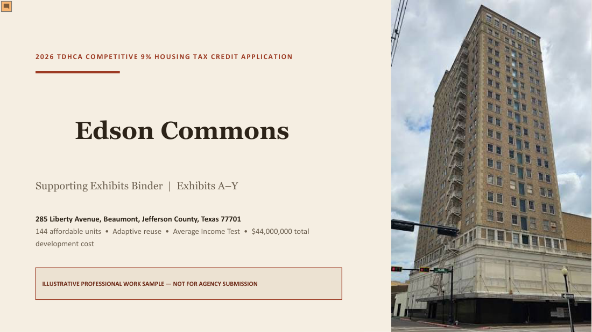
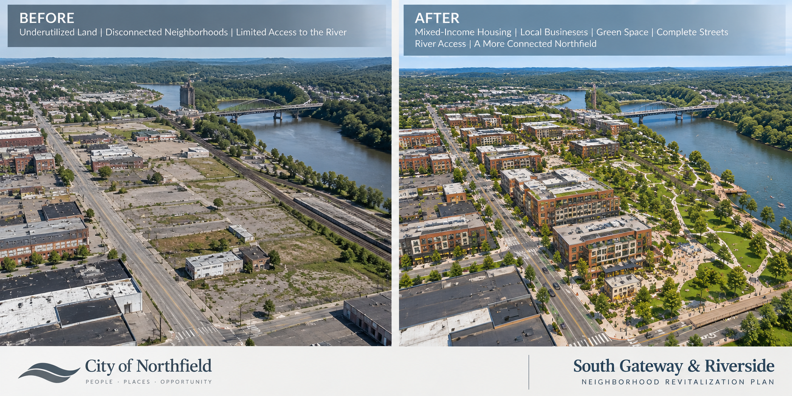
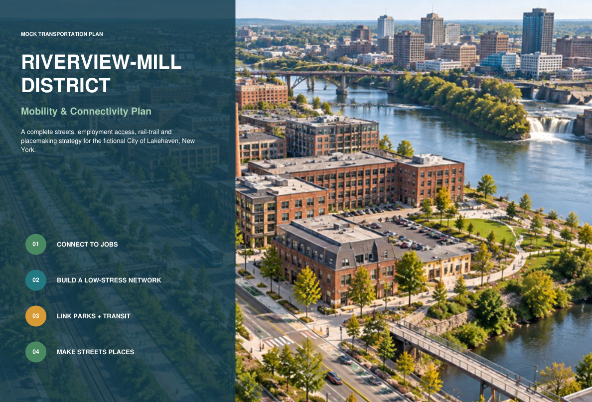
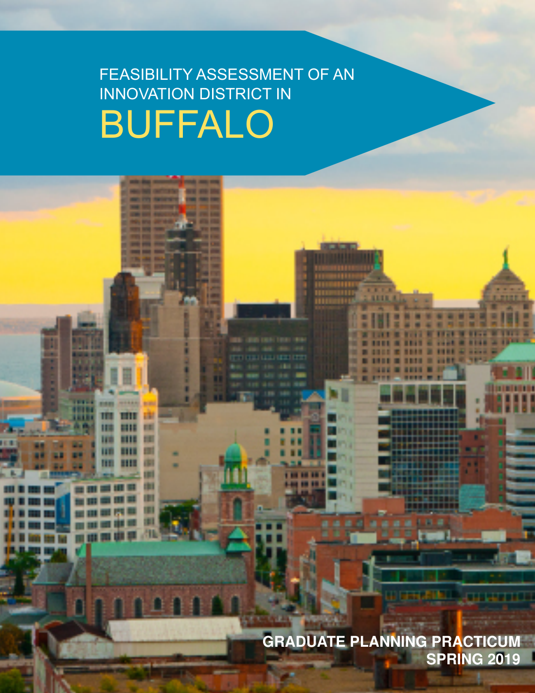
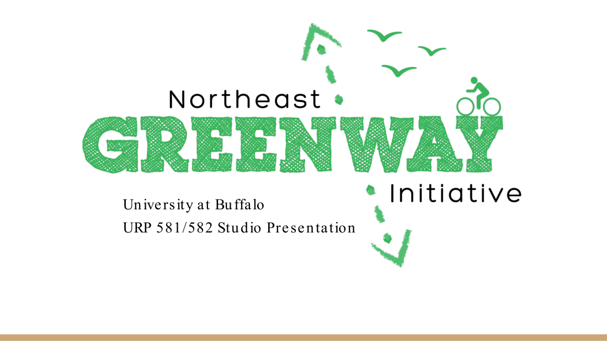
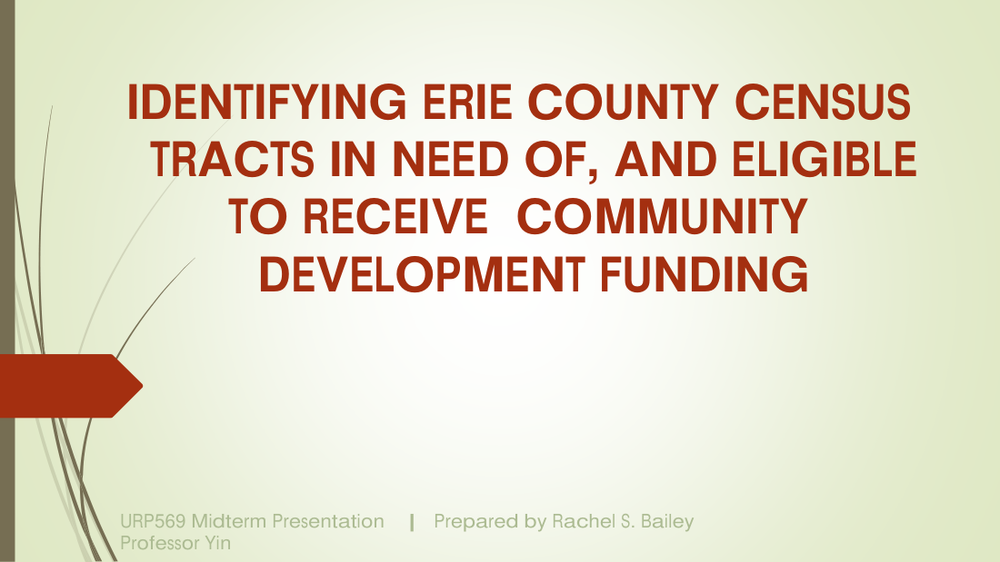

Affordable Housing Development
- Single-Family Infill & Rehabilitation
- Construction Coordination & Closings
- HUD-Funded Project Administration
- Neighborhood-Based Revitalization
Housing Finance · Community Development · Real Estate Project Management
Explore Projects ↓I bring together professional experience in affordable single-family home development, construction project management, real estate, housing and human services, and a Master of Urban Planning. At NEHDA, I managed affordable homeownership development from planning and construction through sale, supporting neighborhood reinvestment through infill and rehabilitation. My work combines development budgets, project schedules, public funding and compliance, contractor coordination, community partnerships and an understanding of housing insecurity. This portfolio includes professional experience and clearly identified illustrative development and graduate planning work.
Selected affordable housing financial modeling, neighborhood revitalization, redevelopment, feasibility and GIS projects. Illustrative work samples and academic studies are labeled as such.

A 144-unit illustrative adaptive-reuse affordable housing development featuring a competitive 9% LIHTC financing model, development budget, sources and uses, eligible basis, debt sizing and a 15-year operating pro forma.

An illustrative neighborhood reinvestment proposal integrating existing-conditions research, community engagement, redevelopment opportunities, implementation strategies, schedules and funding considerations.

An illustrative district redevelopment and mobility plan examining safer streets, transit access, employment connections, greenways and the public realm that supports livable neighborhoods.

Graduate research evaluating market conditions, institutional anchors, land use, economic development opportunities and strategies for district reinvestment.

Graduate planning work examining rail-to-trail conversion, neighborhood access, equitable connectivity, transit connections and community infrastructure.

Mapping and spatial analysis demonstrating research methods relevant to site assessment, neighborhood conditions, land use and development planning.
Affordable single-family homeownership development, infill construction, rehabilitation, development coordination and closings.
Place-based investment, housing opportunities, neighborhood-sensitive redevelopment and community partnerships.
Development budgets, sources and uses, LIHTC modeling, operating pro formas, feasibility and financial analysis.
Resident-centered coordination, public presentations, nonprofit partnerships and work with local housing agencies.
Scheduling, contractor coordination, procurement, budgets, grant requirements, reporting and implementation.